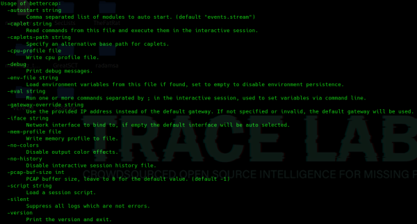
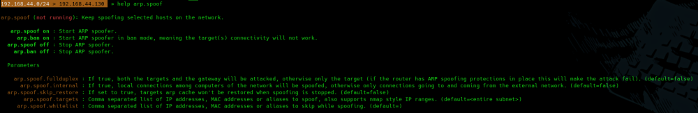

https://github.com/bettercap/bettercap
Considerada la navaja suiza de las herramientas de protocolos de red escrita en go.
sudo apt install bettercap
sudo bettercap --help

Para sacar mas información sobre un módulo concreto:
sudo bettercap
help arp.spoof
